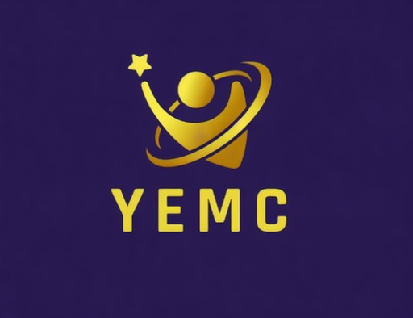

Chief Executive Officer (CEO)
Don Bertille UwingabireProvides overall leadership, vision, and strategic direction. Coordinates meetings and decision-making, and ensures the execution of initiatives aligned with the organization's mission.

YEMCMugara ChangemakersLeadership Roles
Provides overall leadership, vision, and strategic direction. Coordinates meetings and decision-making, and ensures the execution of initiatives aligned with the organization's mission.
Co-leads the founding vision of YEMC alongside the CEO, shaping the organization's strategy, structure, and growth from the ground up.
Oversees planning, coordination, and implementation of long-term programs. Sets goals, develops work plans, monitors progress, and ensures activities align with strategic objectives.
Records and stores minutes of all meetings, keeps all documents, and sends notices for meetings, deadlines, and official announcements. Works closely with the CEO.
Oversees resource management and fundraising, prepares budgets for projects, tracks expenses, and maintains financial records.
Leads planning and execution of events and projects. Coordinates logistics, timelines, and task assignments for members.
Responsible for all forms of communication, including social media, announcements to the core team and members, and branding.
Team Members